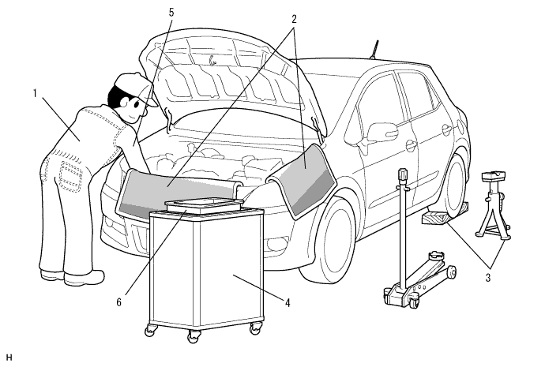
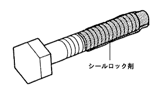
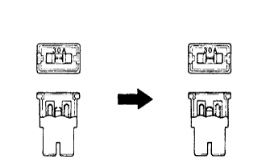
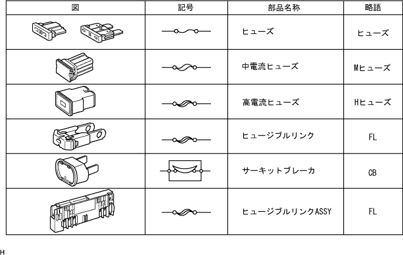
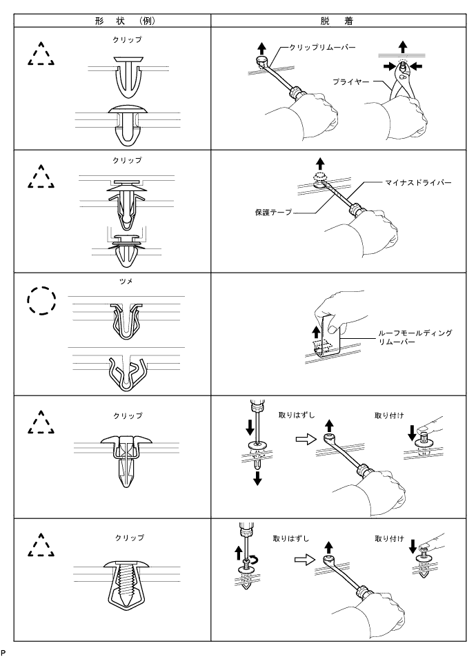
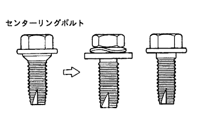
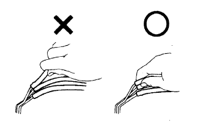
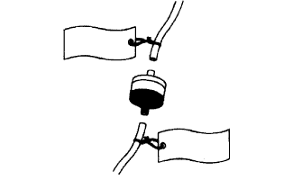
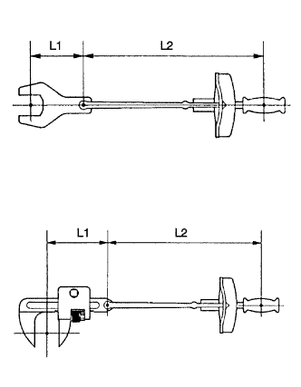

Work Guidelines

| 1 | Appearance |
|
| 2 | Vehicle Protection |
|
| 3 | Safe Work |
|
| 4 | Preparation of Tools and Gauges |
|
| 5 | Removal/Installation, Disassembly and Reassembly Work |
|
| 6 | Removed Parts |
|
 |
Precoated Bolts
Precoated bolts are bolts with seal lock adhesive applied to the threads.
When a precoated bolt is retightened, loosened or moved, recoat it with the specified adhesive.
- ■ NOTICE ■
- Perform torque checks at the lower limit of the allowable torque range.
When reusing precoated parts, remove the old adhesive from the bolt and threaded hole, degrease with white gasoline or equivalent, dry with compressed air, then apply the specified seal lock adhesive to the bolt threads and tighten to the specified torque.
Depending on the seal lock adhesive used, it may be necessary to leave it for a specified time until it hardens.
Gasket
Gaskets are not reusable; always replace them with new ones.
Use seal packing on gaskets as necessary to prevent leaks.
Bolts, Nuts and Screws
Check the torque specifications of bolts, nuts and screws, and always use a torque wrench.
 |
Replace Fuse
When replacing a fuse, use a fuse of the same capacity. If a fuse of a different capacity must be used, use one with a lower capacity than the specified amperage.

Clip

When prying clips or claws to disengage them, always apply protective tape to prevent damage to the vehicle.
General clip removal and installation for body parts is shown in the illustration.
- □ HINT □
- If a clip is damaged during work, always replace it with a new clip.
- In the illustrations, ▲ marks indicate clips and ○ marks indicate claws.
 |
Precautions for Fit Adjustment
If centering bolts are used for the hinges of the hood, doors, luggage compartment door, etc., replace them with service part bolts before adjusting the fit.
Jacking Up, Jacking Down and Supporting the Vehicle
When jacking up, jacking down or supporting the vehicle, always observe the precautions. (Jack, rigid rack and lift support positions section
 )
)
 |
Removal and Installation of Vacuum Hoses
When disconnecting a vacuum hose, hold the hose end and pull it off.
When disconnecting vacuum hoses, use tags so that you know where they connect.
When using a vacuum gauge, do not connect the hose if the connector is too large. Use a slightly smaller adapter for adjustment. Once a hose has been stretched, air leaks may occur.
 |
 |
Torque When Using Extension Tool with Torque Wrench
When an SST or tool is combined with a torque wrench to extend its overall length, tightening until the torque wrench reading reaches the specified torque will result in excessive actual torque.
The text gives the specified torque and the reading T´ calculated for use with a typical torque wrench and preparation items. If a torque wrench and preparation items of the same type are not available, calculate the torque wrench reading using the formula.
Formula T'=T×L2/(L1+L2)
T' Torque wrench reading [N*m{kgf*cm}] T Specified torque [N*m{kgf*cm}] L1 Length of SST or Tool [cm] L2 Length of Torque Wrench [cm]